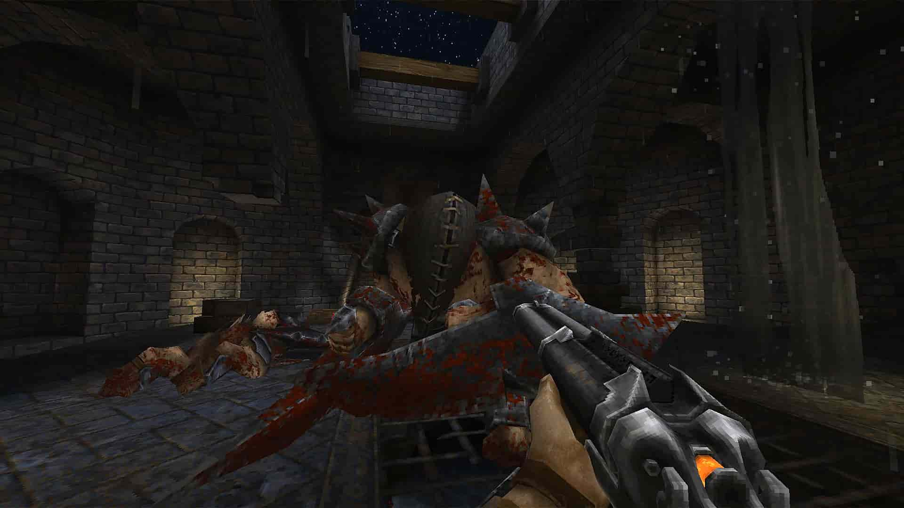

Wolfenstein 3D
o gênero passou a ser uma verdadeira febre apenas em 1992, com a chegada de Wolfenstein 3D, a primeira grande produção do FPS e que viria a abrir as portas para uma das vertentes de jogos mais bem explorada até os dias de hoje.
Em Wolfenstein 3D, você entrava na pele de um soldado americano aprisionado pelos nazistas, que fará de tudo para escapar vivo deste pesadelo. Dentro de um castelo repleto de inimigos fortemente armados e armadilhas diversas, o gênero de tiro
em primeira pessoa viria a ganhar prestígio e novos admiradores.

DOMM
Um ano após o lançamento de Wolfenstein 3D, chegaria ao mercado o verdadeiro responsável pela febre que o gênero de ação e tiro em primeira pessoa se tornaria um dia. Doom reunia em sua época tudo que uma geração de jovens precisava para se
divertir em um jogo, como gráficos impressionantes, enredo inovador, violência desmedida, jogabilidade facilitada e introdução ao modo de jogo multiplayer.
A história coloca você no papel de um soldado enviado para Marte como punição para um desvio de conduta. Chegando lá, você toma conhecimento de que testes realizados na estação sobre teletransporte entre as luas de Marte trouxeram seres malignos
como conseqüência. Agora, você estará em um verdadeiro inferno, lutando contra alienígenas desconhecidos e prontos para arrancar a sua vida a todo custo.

Duke Nukem
Com aspectos técnicos aperfeiçoados em relação ao Doom e um protagonista que na verdade parecia uma sátira de heróis do cinema americano, como Arnold Schwarzenegger, Duke Nukem fazia uso de piadas infames, alusão ao erotismo e diversas outras
características inovadoras para a época, o que garante o seu lugar de destaque na história do gênero.

Quake
Durante muitos anos a partir de 1994, diversos jogos lançados para computador viriam a ser considerados meras cópias de Doom, e realmente eram muito parecidos com o pioneiro. No entanto, em 1996 é lançado Quake, o próximo grande revolucionário
do gênero e título que daria entrada a um novo conceito de disputas online, com gráficos totalmente em três dimensões pela primeira vez no segmento.

Half-Life
Dois anos depois, seria lançado o segundo grande divisor de águas no mundo do FPS, o game Half-Life. Com um motor gráfico inovador, narrativas envolventes e recursos extraordinários para a época, o jogo conquistou todos os amantes do estilo
em pouco tempo a partir de seu lançamento, em 19 de novembro de 1998. Neste mesmo ano, Half-Life ganharia nada menos que cinquenta e um prêmios de melhor jogo do ano, emplacando o seu nome na história do FPS e servindo de modelo para jogos
até os dias de hoje.